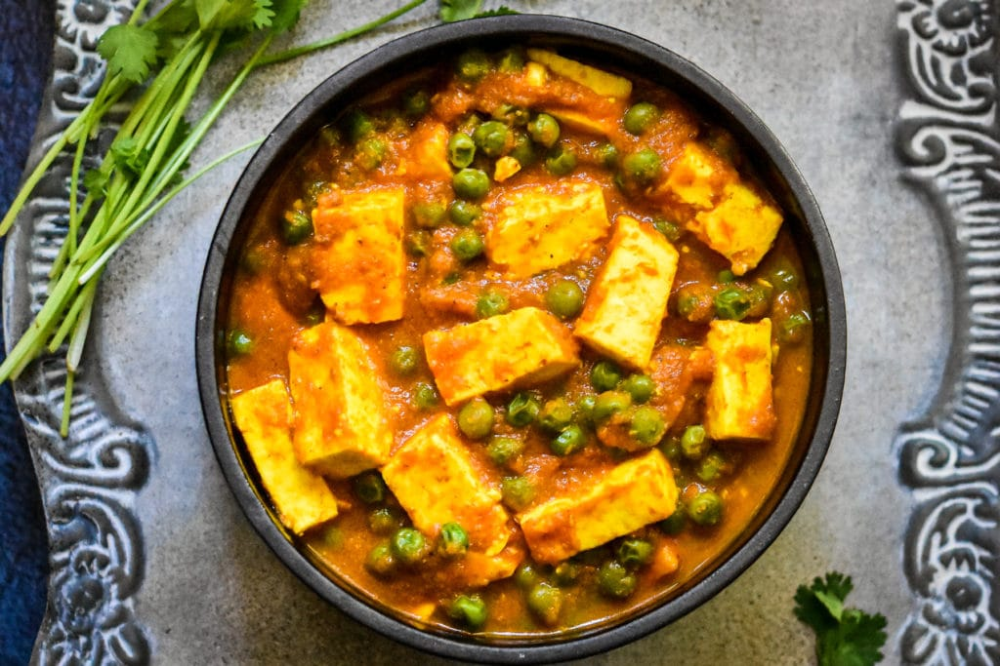

Matar Paneer Recipes

what is Matar-paneer?
Matar Paneer, also known as matar-paneer or mutter paneer, is a vegetarian curry consisting of paneer and peas simmered in a tomato-based sauce seasoned with garam masala and a few additional spices.
Matar is the Hindi word for "peas", whereas Paneer is India's version of cottage cheese. It originates from the North Indian state of Punjab and is commonly served with cumin rice or Indian flatbread Roti, alongside.
How to Make Matar Paneer in 30 Minutes
All it takes is some slicing,dicing,and pureeing to make this mutter paneer recipe.Let's take a look at what we need to make this simple, yet satisfying curry.
Ingredients - Notes & Substitutions
The ingredient list is quite simple and includes a fewraditional aromatics like onion, ginger, garlic, tomatoes, cashews, a handful of Indian spices, paneer, and peas.
-
Tomatoes:
"Feel free to use fresh, pure Desi tamatos"
-
Indian Spices:
We're using commonly used Indian spices in this recipe, including turmeric, coriander, cumin, garam masala and Kashmiri red chili powder. The only one you may not have on hand is dried fenugreek (also labeled as kasuri methi), a herb with a bitter yet addictive taste. If dried fenugreek is unavailable, omit it altogether since there isn't a close substitute for it.
-
Paneer:
Paneer is an Indian non-melting, soft, pressed cheese that's easily available (and less expensive!) at Indian grocery stores or specialty ethnic stores. Make it at home using this easy homemade paneer recipe, or buy your favorite brand of store bought paneer (Nanak, Verka, Haldiram).
-
Peas:
Green peas are a staple in my freezer and one of the star ingredients today! For best results, scoop out 2 cups frozen peas and place in a bowl to thaw on your kitchen counter while you gather together the rest of the ingredients and cook the curry.
-
Cashews:
The rich and naturally sweet taste of cashews makes this curry creamy and compliments the paneer really well. It is an optional ingredient though, and the curry can be made without it too.
Make it Spice:
Add a little kick to this curry by adding 1-2 green chilies, like serrano or Thai chili.
Step By Step Instructions in Instant Pot
"Let's review how to make this simple and easy recipe in an electric pressure cooker."
-
Saute Aromatics, Tomatoes & Spice
Turn on Saute mode. Wait for 30-40 seconds for it to get hot. Add oil and chopped onions and cook for 3 minutes, until they soften (Pic 1)
Add minced garlic, ginger, and sauté for one minute. Then, add tomatoes, spices, cashews (if using), and cook another minute. Add water and scrape off any brown bits that may have stuck to the bottom. Cancel Saute (Pic 2).
-
Pressure Cook
Close the lid and pressure cook on High for 5 minutes (sealing mode). When the cooking time is done, follow the quick release instructions of your cooker. Open the lid after the pin drops (Pic 3).
-
Puree
Using an immersion blender, puree the sauce to a smooth consistency. If the blender head is not fully immersed in the sauce, carefully lift and tilt the pot to blend. (Pic 4)
Note: If using a traditional blender, wait for the sauce to cool down and then blend to smooth consistency.
-
Finish and Serve
Turn on Saute. Add paneer, peas, and dried fenugreek and simmer uncovered for 3 to 4 minutes. If tomatoes are too acidic, add ¼ to ½ teaspoon agave or sugar to balance the flavors (Pic 5).
Simmer until the paneer is soft and peas are cooked through. Cancel Saute and garnish with cilantro (Pic 6).
.webp)